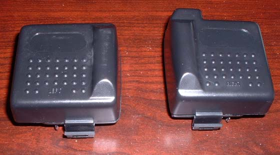
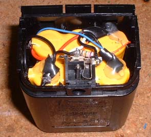

Rechargable Battery Pack
Here's a how-to for converting a Sega Game Gear rechargable battery pack to the Virtual Boy. It uses the electronics out of the Game Gear pack and they surprisingly fit really well into the normal VB battery case.

First, you start with the Game Gear battery pack... I'm assuming pretty much any of them will work, I got mine from ebay, it's the Recoton one with separate packs.
Then pull the case apart so you can get to the insides...
Then cut the wires so the battery packs are free
You'll see that you have a bunch of wires and a socket left in the one side... you can get rid of the other side.
You want to cut the wires so you have the socket and resistor assembly.
Next, you're going to solder a wire to the connectors on the end of the battery back that connect to the controller, either the back where the actual piece touches, or the battery connector at the end that makes contact with the controller connector.
Then you'll want to stick the battery packs together back to back and solder the negative of one to the positive of the other, and leave a positive and negative unconnected.

Next, make a notch in the front of the case for the AC adapter socket, then make sure all the wires are pulled up and push the battery packs down into the case. You may need to cut some of the plastic for the battery packs to fit in.
Then you need to shave down some of the socket so it will fit nicely into the case when it is finished.
Next, you need to place the socket into the case, bend all the wires and the resistor down so the case will close, then connect all the wires to their proper connections. The + from the controller connector goes to the white wire and the + on the battery pack. Refer to the pics for better details, but the one black wire goes to the - on the controller connector, and the other black wire goes to the - on the battery pack.

Then you should tape up the wires, and I hot glued mine down.

To get the lid on, you're going to need to take all the pieces out of it, then take a dremel and shave off the excess plastic. You also need to make a notch for the AC adapter socket.
Then when you're done, you get this! No more worrying about having the AC adapter plug fall out on you, and now it truely can be portable and not waste tons of money on buying batteries. I haven't tested how long this will actually run the VB, but when I do, I'll let you know how long it lasts (FYI, I'd assume it'll last around 3 hours because the VB runs about as long as a Game Gear on 6AA's - 6 hrs., and this pack is supposed to run a Game Gear approximately 3 hrs.).
{kind=link}